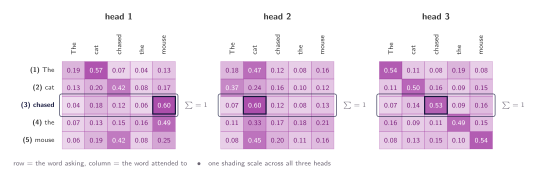
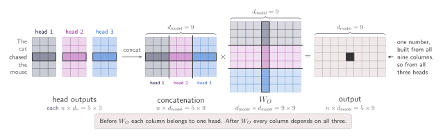

07 · Queries, Keys, and Values
Multi-Head Attention
Many lookups in parallel, so that different heads can ask different questions of the same context.
The previous section closed the loop for the attention idea. The sentence arrives as $X$, three learned matrices turn it into $Q$, $K$ and $V$, and every word walks away with a new representation built out of the whole sentence. Nothing in the mechanism is left undefined any more. Each word actually receives: one row of weights, one distribution over the five words, one blend.
Let's take the word chased from our sentence The cat chased the mouse. Its row of weights came out to be 0.04, 0.18, 0.12, 0.06 and 0.60, and reading that row as a set of relations is enough to spot a problem. A verb eeds its object, and mouse takes 0.60 of the row. A verb also needs its subject, and cat is left with 0.18. The row is a softmax, so it sums to one whatever happens, which means every point of weight spent on the object is a point not spent on the subject. What chased receives is a single blend of two different relations. One relation is served well, the other not eally, and both in the same vector.
The obvious direction would be to give th emodel more room and make $d_k$ large, so the query has space to encode the subject relation and the object relation at the same time. It does not here, and the reason is not capacity. However wide $q$ and $k$ become, the dot product still collapses to one number per pair, and what comes out is still one row. One possible solution would be to drop softmax and let the row stop summing to one, but we've seen that without normalisation there are no proportions left to blend in.
Run the lookup more than once
If one lookup produces one distribution, then two distributions ask for two lookups. That is the whole idea, and it is as blunt as it sounds. We change nothing inside the mechanism of section 05. We run it more than once over the same sentence, each run with its own $W_Q$, $W_K$ and $W_V$. Every run scores its own queries against its own keys, takes its own softmax, and hands chased its own row of weights. Two runs, two budgets, and now one of them can spend most of its weight on cat while the other spends most of its weight on mouse, with neither paying for the other. Each of these parallel runs is called a head.

The crazy part about what is being shown above, and you can even argue is a bit obvious, is that nothing new is happening inside any head. A head is the mechanism we saw in the last section and we keep it here unchanged. What is new is only that we now have $h$ of them, each carrying its own three matrices. Writing the $m$-th head out in full,
where each matrix is given by:
$$Q^{(m)} = XW_Q^{(m)}, \quad K^{(m)} = XW_K^{(m)}, \quad V^{(m)} = XW_V^{(m)}$$here $m$ runs from 1 to $h$, the number of heads, and $h = 3$ in the figure above. The same $X$ goes into every head, and no head reads what another head produced, so the $h$ runs happen side by side rathen than one after another. Each of them returns an $n \times d_v$ matrix, one row per word, exactly as a single head did.
That leaves us using two things. Three heads look like three times the parameters and three times the word, and so far no comments have been made about the cost of this. Each word now walks away with three output vectors where before it had just one. So chased now holds one answer from head 1, another one from head 2, and a different one from head 3.
Splitting the cost
Three heads look expensive because we have quietly assumed that each one is as wide as the single head it replaces, but the interesting part is that nothing is actually forcing us to that constraint. The width of a head is ours to choose. We fixed $d_k$ and $d_v$ by hand in section 06, and training only ever filled in matrices of the size we asked for. So if we are going to run $h$ heads, we can make each of them narrower. A possible choice would be divide the width we already had between them, $d_k = d_v = d_{\text{model}}/h$. Three heads, each a third as wide, and now the cost is the one we were already paying with one head.
Concretely, take $h = 3$ heads with $d_k = d_v = 3$, so the model is $d_{\text{model}} = 9$ wide. Each $W_Q^{(m)}$ is then $9 \times 3$ rather than $9 \times 9$, and it turns the $5 \times 9$ sentence matrix $X$ into a $5 \times 3$ matrix of queries. This might seem unnecessary, but actual models are wider and deeper than our toy example. For instance, the original Transformer taeks $d_{\text{model}} = 512$ and $h = 8$, which leaves $d_k = d_v = 64$.
The counterintuitive part is that multi-head attention does not increase the overall size or computational cost of the model. Rather, it divides the workload of a single, full-width attention mechanism.
- Parameter Count: Each of the $h$ heads contains three matrices of size $d_{\text{model}} \times (d_{\text{model}}/h)$. When aggregated across all $h$ heads, this totals $d_{\text{model}}^2$ parameters per role, which is exactly the same number required for a single full-width head.
- Projection Cost: Projecting the input matrix $X$ requires $n \cdot d_{\text{model}} \cdot d_k$ operations per head. Multiplied across all $h$ heads, the total computational cost remains $n \cdot d_{\text{model}}^2$.
- Scoring and Blending Cost: Calculating the attention scores and blending the final values costs $n^2 \cdot d_k$ operations per head. Across all heads, this scales to $n^2 \cdot d_{\text{model}}$.
Overall, every operational cost matches what a single full-width head would require. Multi-head attention is not multiple separate attention blocks arbitrarily concatenated. It is a single attention block systematically partitioned into smaller segments.
Putting the heads back together
If you remember, the word chased is holding three vectors, one from each head, each of them $d_v$ wide, and so far the rest of the model has no idea what to do with those three. The obvious move is to stop treating them as three things and write them side by side as a single row: $h$ heads of width $d_v = d_{\text{model}}/h$ sit next to each other in exactly $d_{\text{model}}$ columns. Concatenating the $h$ outputs gives an $n \times d_{\text{model}}$ matrix, so every word leaves at the same width it arrived at.
This concatenation operation is not enough. Writing three answers next to each other leaves each head still owning its own slice of the row, meaning columns 1 to 3 are head 1's, columns 4 to 6 are head 2's, and columns 7 to 9 are head 3's, and no number in one block has interacted with a number in another. The problem we were trying to tackle is how to get different perspectives on the context a word sits in, and if we do not find a way to join them, our work would be for nothing.
In order to achieve this, we add one more learned matrix, $W_O$, of shape $d_{\text{model}} \times d_{\text{model}}$, and multiply the concatenated rows by it. Every column of the output is now free to be a mixture of all $h$ blocks, which makes $W_O$ the place in the whole mechanism where one head meets another. This also clarifies a gap in our earlier arguments about cost: this is a fourth matrix that a single head never needed, so the parameter count goes from $3d_{\text{model}}^2$ to $4d_{\text{model}}^2$. The heads themselves are free, and what actually costs us is re-joining them.

Everything in this section now fits on one line:
Aside: more about concatenation
Look again at the row blocks drawn inside $W_O$ in the figure above. Cut $W_O$ into $h$ blocks of rows,
so that block $m$ holds exactly the $d_v$ rows that head $m$'s columns multiply against. The concatenation is a row of blocks and $W_O$ is a column of blocks, which is the one case where a matrix product collapses into a sum:
Check the shapes. Each $\text{head}_m$ is $n \times d_v$ and each $W_O^{(m)}$ is $d_v \times d_{\text{model}}$, so every term of the sum is $n \times d_{\text{model}}$, the full width of the output, and the $h$ terms are added on top of one another.
That is, every head produces its own full-width answer, and the answers are added. Head $m$ never writes into a private slice of the output. It projects its $d_v$ numbers up to all $d_{\text{model}}$ columns through its own block $W_O^{(m)}$, and what lands in the output is the sum of $h$ such contributions.
All of it fits in a dozen lines. The head index is a leading dimension rather than a loop, so the projections happen for every head at once and the softmax runs on $h$ tables instead of one.
def multi_head_attention(X, W_q, W_k, W_v, W_o):
"""
h --> number of heads, the lookups run in parallel
n --> sequence length, one row per word, 5 for our sentence
d_model --> width a word arrives and leaves at
d_k, d_v --> width inside one head, both d_model // h
X (n, d_model) W_q (h, d_model, d_k)
W_k (h, d_model, d_k) W_v (h, d_model, d_v)
W_o (d_model, d_model) the only place the heads meet
"""
# every head projects the same X, and no head sees another head's work
Q = X @ W_q # (h, n, d_k)
K = X @ W_k # (h, n, d_k)
V = X @ W_v # (h, n, d_v)
d_k = Q.shape[-1]
scores = Q @ K.transpose(-2, -1) # (h, n, n)
weights = torch.softmax(scores / d_k**0.5, dim=-1)
heads = weights @ V # (h, n, d_v)
# write the h answers side by side, then let W_o mix them
concat = torch.cat([heads[m] for m in range(heads.shape[0])], dim=-1)
return concat @ W_o, weights # (n, d_model), (h, n, n)
What the heads actually learn
For the sake of clarity, we have been talking the whole way through as though head 1 handles objects and head 2 handles subjects. However, nothing we built actually makes that happen. Go back over the section and look for the place where a head is told what to look for, and there is no such place. The heads differ because $W_Q^{(m)}$, $W_K^{(m)}$ and $W_V^{(m)}$ start as different random numbers, and they stay different because nothing ever pulls them back together. No term in the loss asks the heads to specialise, and no part of the mechanism assigns them a fixed direction.
A fair question, then: why do they end up different at all? And the answer is not that something we added rewards difference, but that nothing removes it. Three sets of matrices start at three different random points, gradient descent moves each of them towards whatever reduces the loss from where it happens to stand, and there's no force in the mechanism pulling them back together.
The figures above are an illustration of what different heads can look like, not a claim about what any particular model's heads do. Looking back at the word chased, it leaves this section holding one vector, the same width it arrived at, and that vector may now contain its object and its subject together. We have not touched which positions a head is allowed to read at all. Every head we have built reads the entire sentence, every word scoring against every other. The numbers being generated here are not the product of a fixed rule, but of the model deciding on its own what to focus on.